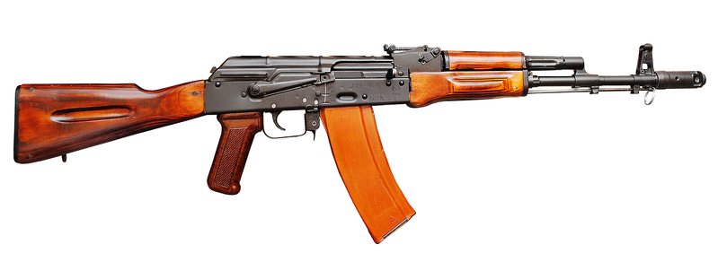

АК-74М
Описание
5,45 мм автомат Калашникова АК74М в различных модификациях до сих пор является штатным индивидуальным стрелковым оружием во многих странах.
АК74М построен на «классической схеме АК», отличающейся надёжностью функционирования, в том числе в затруднённых условиях эксплуатации, высокой технологичностью производства и лёгкостью в освоении личным составом с любым уровнем подготовки.
Данная модель является эволюционным развитием автоматов АК74 и АКС74 и отличается от них полимерными частями (взамен деревянных), наличием боковой планки для установки прицелов.
История:
Положительный опыт использования малокалиберного патрона США заставил СССР начать работу по разработке аналогичного автоматного патрона, но уже существовали предложения по разработке малокалиберного патрона. В 1966 году главное ракетно-артиллерийское управление выдало задание на разработку нового автомата под калибр 5,60 мм — так обозначался калибр малоимпульсного патрона по дну нарезов. После принятого в СССР измерения калибра по полям нарезов обозначался как 5,45 мм. Данный патрон был разработан в ЦНИИточмаш.
Уменьшение калибра давало уменьшение массы патрона более чем в 1,5 раза. Значительно увеличивалась начальная скорость пули, траектория полёта стала более настильной, дальность прямого выстрела увеличивалась примерно на 100 м, уменьшались время полёта пули к цели и её снос боковым ветром, импульс отдачи — все это способствовало улучшению меткости, особенно при стрельбе очередями. То есть речь шла не просто об улучшении кучности стрельбы, а об общем повышении боевой эффективности комплекса «патрон-оружие». Конструкция удлинённой пули позволила обеспечить сочетание устойчивости на траектории с убойным действием не хуже, чем у пули патрона образца 1943 года.
Постановлением ЦК КПСС и Совета Министров СССР № 54-29 от 18 января 1974 года и последующим Приказом Министра обороны СССР № 49 от 18 марта 1974 года на вооружение был принят новый унифицированный комплекс автомата Калашникова, включавший четыре базовые модели автомата и столько же ручных пулемётов.